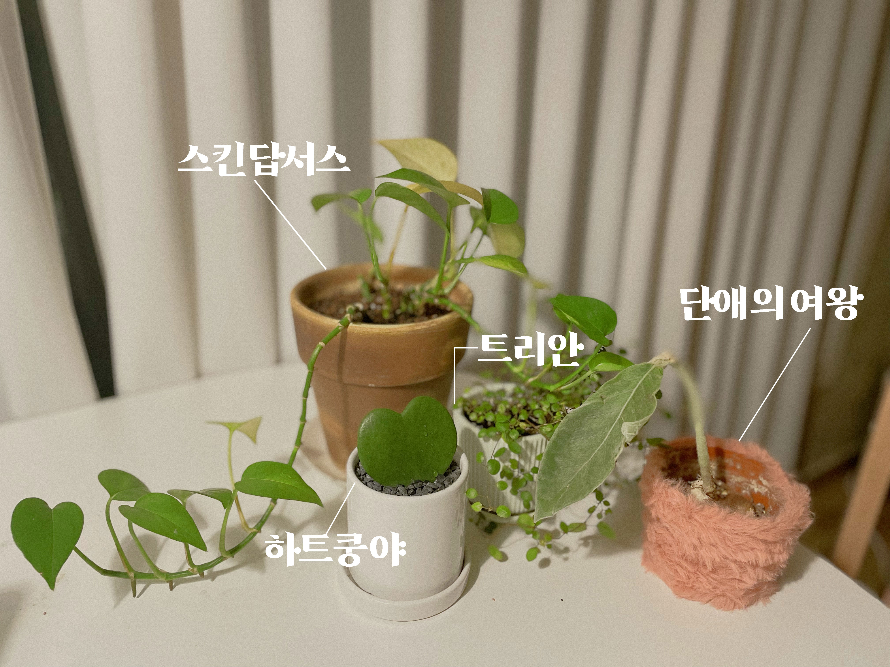
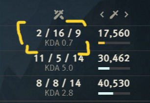
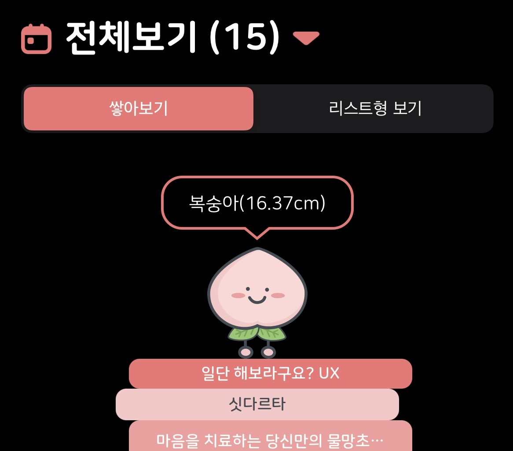

제가 소중하게 생각하는 물건은 키우는 식물들입니다. 스킨답서스, 트리안, 하트쿵야, 단애의 여왕을 키우고 있어요.
너무 예쁘죠! 많이 사랑하고 아끼는 마음으로 키우고 있답니다. 물 주는 걸 좀 미뤘다가 잎사귀가 노랗게 변하면 마음이 아파요.

불호
게임을 별로 좋아하지 않습니다. 제 처음이자 마지막 게임은 롤인데요.
복잡한 상성과 높은 컨트롤 실력을 요구하는 게임이었고, 1년 하고 재능이 없다는걸 깨달았습니다.
이 외에도 몇 모바일게임을 해보았는데 며칠하다가 질려서 한 달 이상 해본건 없네요.
가볍고 재밌게 즐길 수 있는 게임이 있다면 제게 추천해주세요.

호
독립서점에 들르는 것, 책과 글쓰는 것을 좋아합니다.
친구가 독서 습관이 잡혀있는건 굉장히 큰 무기라고 하더라구요.
그때 깨달았어요. 단순히 좋아하는 걸 넘어 나에게 힘이 되어주는구나. 나중에는 제 이름으로 독립출판도 해보고 싶어요.
요즘 읽고 있는 책은 나카지마 다카시의 메모하는 습관입니다.

불호
단것을 별로 안좋아합니다. 1년 전만 해도 빵, 오렌지 주스, 브런치, 수플레 팬케이크 등을 좋아했었는데요.
지금은 어른이 된건지 면과 빵, 달달구리보다 밥이 좋습니다.